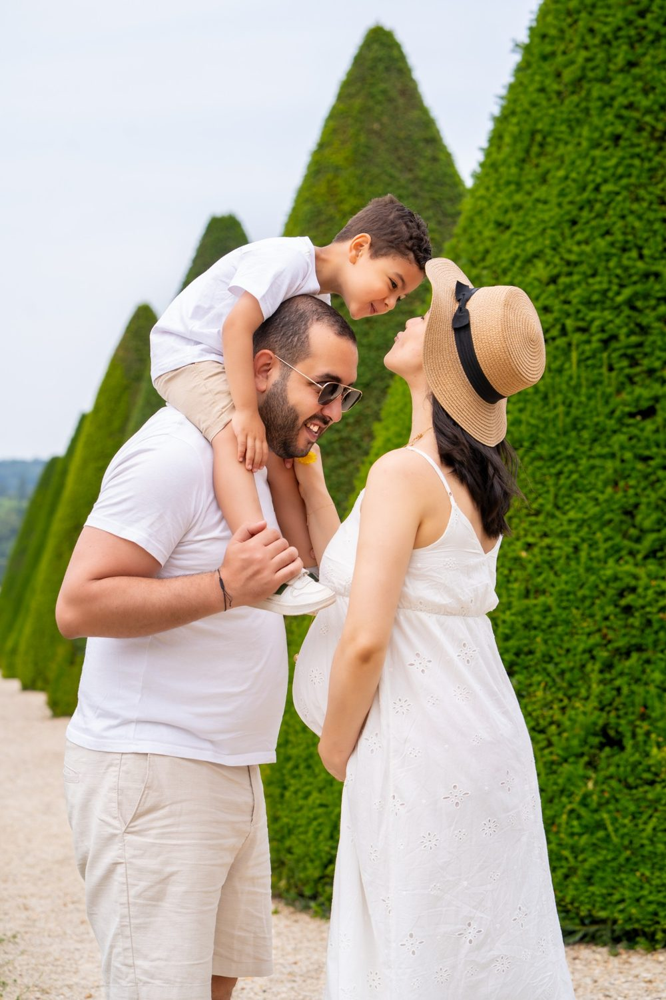
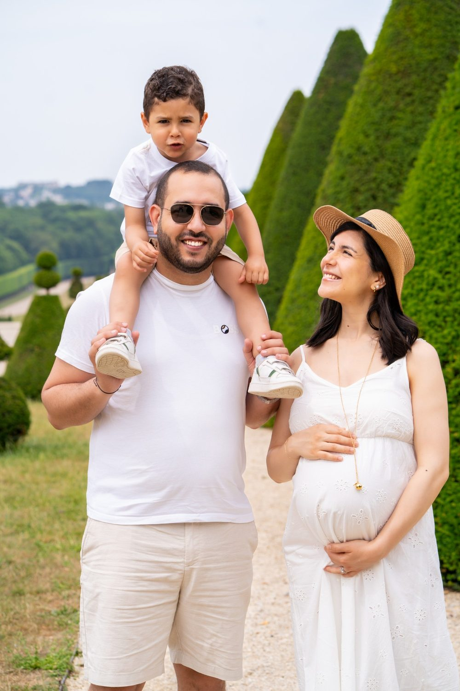
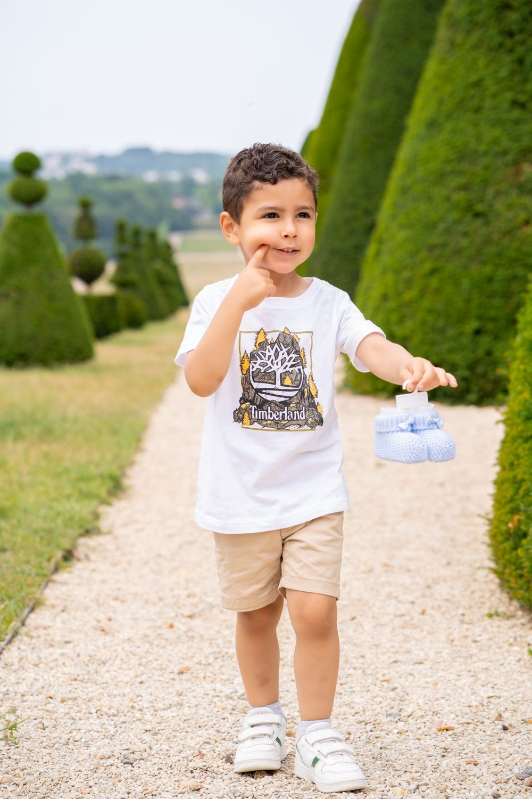

Séance photo famille à Boulogne-Billancourt
Boulogne-Billancourt borde le bois de Boulogne et compte les jardins Albert-Kahn, l'île Seguin et un riche patrimoine Art déco. Pour une séance famille, nous aimons le cadre de Jardins Albert-Kahn et celui de Bois de Boulogne.

Où faire votre shooting
Une séance famille à Boulogne-Billancourt trouve au Bois de Boulogne et aux Jardins Albert-Kahn de l'espace pour courir et des recoins pour se serrer. Les enfants courent dans les allées du Bois de Boulogne pendant que nous captons les éclats de rire. Sur une pelouse, toute la famille s'assoit en cercle pour un portrait tranquille. Aux Jardins Albert-Kahn, la forêt bleue invite les plus petits à explorer. Un mini-film garde ces moments de jeu où personne ne pose.
Nos lieux pour cette séance
Jardins Albert-Kahn
Jardin japonais, roseraie et forêt bleue. Un parc où les enfants peuvent courir sans contrainte pendant que nous photographions.
Bois de Boulogne
Lacs et allées en lisière.
Rue de Sèvres
Immeubles Art déco et boutiques. Des rues et des places pour des portraits de famille au naturel, entre promenade et sortie.
Île Seguin et La Seine Musicale
Architecture contemporaine au bord de l'eau.
Bien choisir son moment
Résidentiel, vert, avec des bords de Seine. Les jardins Albert-Kahn sont très photogéniques au printemps et à l'automne.
Nous aimons les séances où les enfants courent, grimpent, boudent un peu, puis finissent par rire. Nous nous adaptons à leur rythme et à celui des plus petits.
En famille à Boulogne-Billancourt, préférez le Bois de Boulogne en matinée, avant la sieste des petits et l'affluence du week-end. Prévoyez une poussette pliable et un goûter : les allées sont longues et une pause au bord d'un lac détend tout le monde.
À Boulogne-Billancourt, vous êtes à Métro Marcel Sembat, Pont de Sèvres, Porte de Saint-Cloud : nous préparons l'itinéraire entre les lieux avec vous.



Avant de nous écrire
Où faire des photos de famille en plein air à Boulogne-Billancourt ?
Pour des photos de famille en plein air à Boulogne-Billancourt, le Bois de Boulogne offre des allées et des lacs où les enfants bougent librement. Les Jardins Albert-Kahn ajoutent des décors variés, du jardin japonais à la forêt bleue.
Combien de temps dure une séance photo famille à Boulogne-Billancourt ?
Une séance photo famille à Boulogne-Billancourt dure en général une à deux heures, selon l'âge des enfants. Nous organisons des pauses et des jeux pour que les plus jeunes restent de bonne humeur jusqu'au bout.
Comment venir à Boulogne-Billancourt ?
Métro Marcel Sembat, Pont de Sèvres, Porte de Saint-Cloud. Nous nous déplaçons avec notre matériel photo et vidéo.
Et si un enfant est timide ?
Nous prenons le temps de nous présenter, nous laissons l'enfant observer, et nous évitons les consignes trop directes.
Parlons de votre mariage
Demander un devisFamille ailleurs en Île-de-France
© Le Couple Photographe · Photographe de mariage Paris & Île-de-France · Mis à jour le 10 octobre 2026
Demander un devis